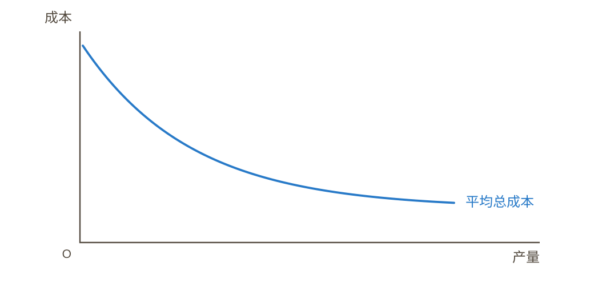
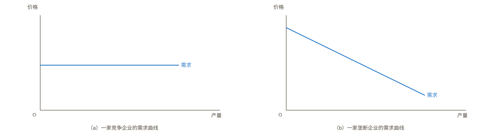
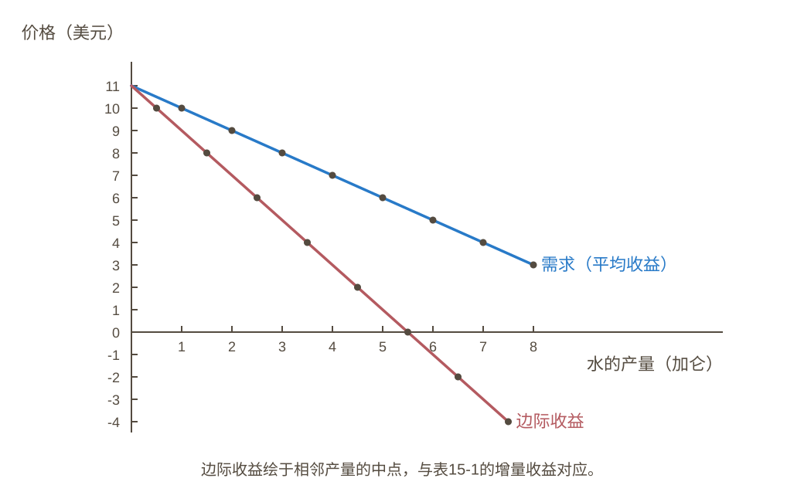
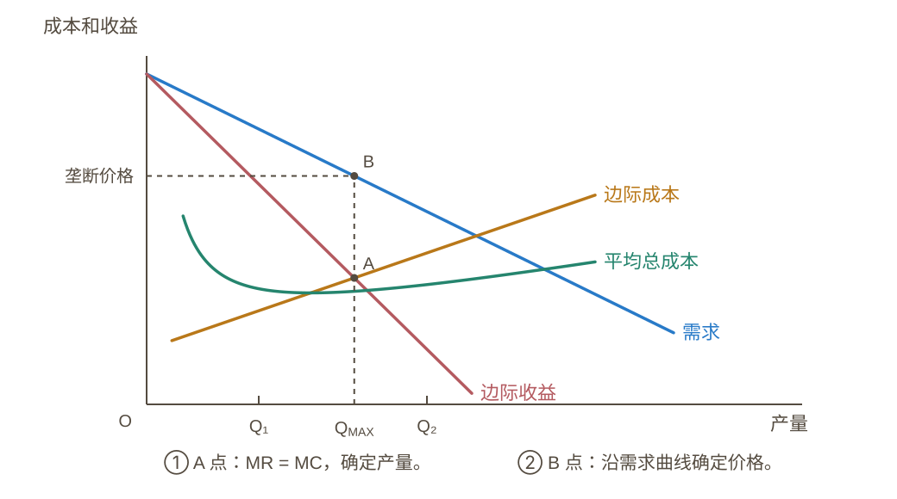
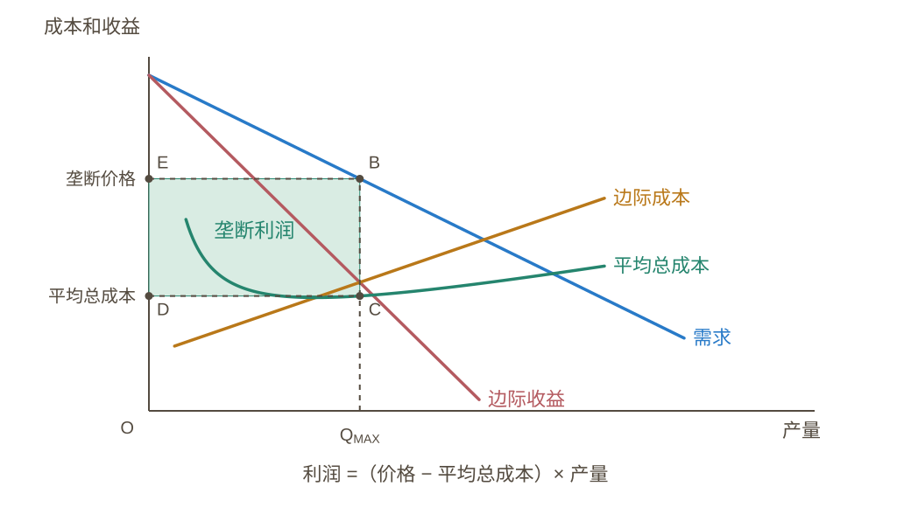
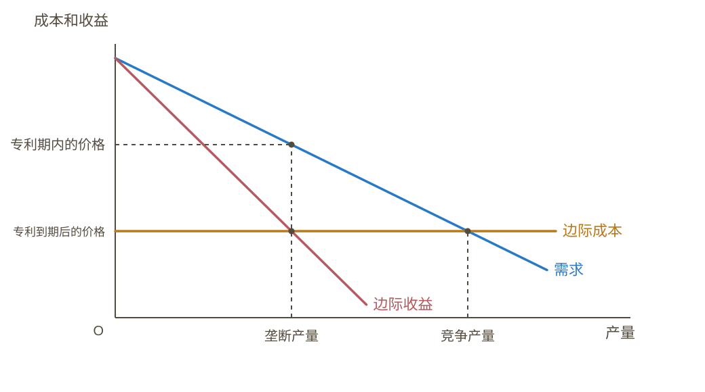
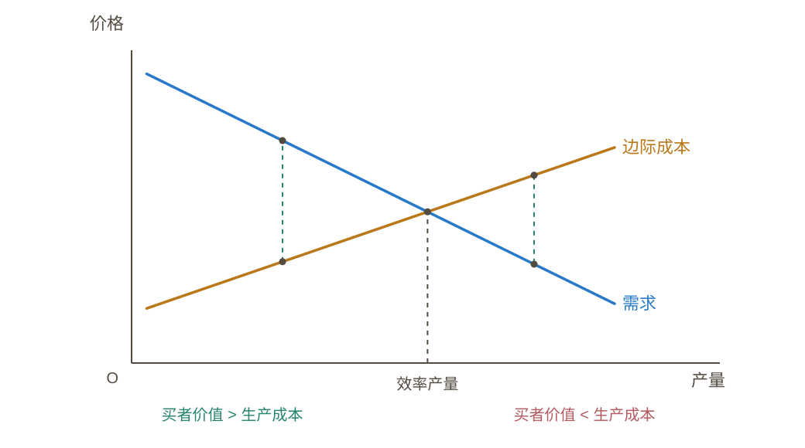
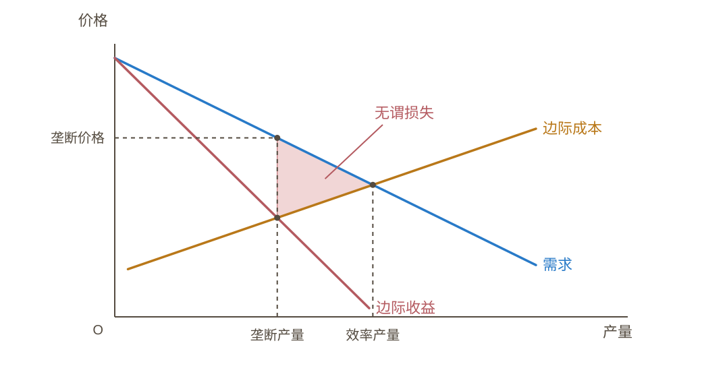
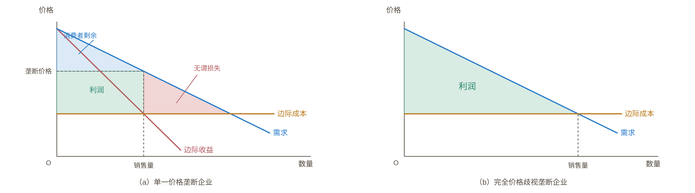
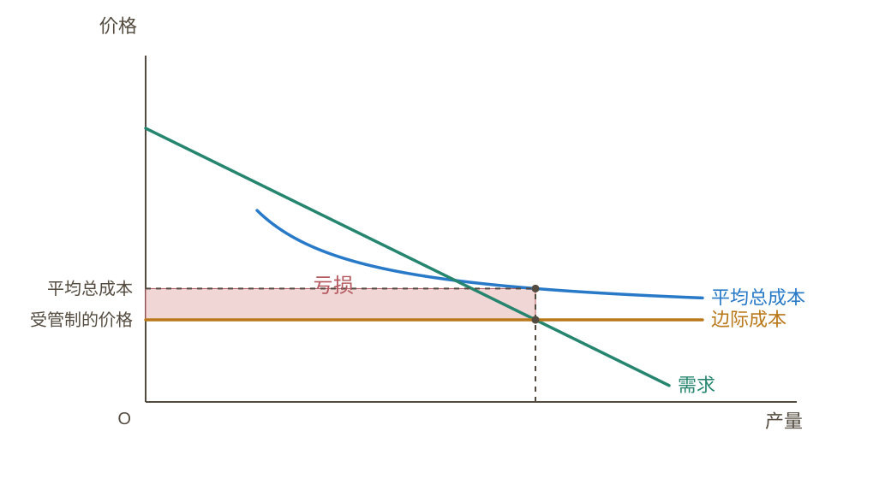

图15-1 · 规模经济是垄断产生的一个原因

当一个企业的平均总成本曲线持续下降时，该企业就被称为自然垄断企业。在这种情况下，当生产分散到更多企业中时，每个企业的产量减少了，平均总成本上升了。结果是，单个企业可以以最低成本生产任何既定量的产品。

当一个企业的平均总成本曲线持续下降时，该企业就被称为自然垄断企业。在这种情况下，当生产分散到更多企业中时，每个企业的产量减少了，平均总成本上升了。结果是，单个企业可以以最低成本生产任何既定量的产品。

竞争企业是价格接受者，面对水平的需求曲线。 垄断企业面对向下倾斜的市场需求曲线；增加销量需要降低价格。

增加销量需要降低所有已售产品的价格，因此边际收益低于价格，并可能为负。

边际收益与边际成本的交点决定利润最大化产量，再由需求曲线确定该产量对应的价格。

矩形 BCDE 的面积等于垄断利润；高是每单位利润，宽是销售数量。

专利期内在 MR = MC 处生产并收取垄断价格。专利到期后，竞争使价格降至边际成本，产量增加。

需求表示对买者的价值，边际成本表示垄断者的生产成本。两条曲线交点对应使总剩余最大的效率产量。

垄断产量低于效率产量。两种产量之间，需求曲线与边际成本曲线围成的三角形表示无谓损失。

单一价格下，总剩余包括利润与消费者剩余，并存在无谓损失。 完全价格歧视下，企业获取全部剩余；消费者剩余和无谓损失均为零。

按边际成本定价时，价格低于平均总成本，企业产生亏损；阴影矩形的面积表示亏损额。